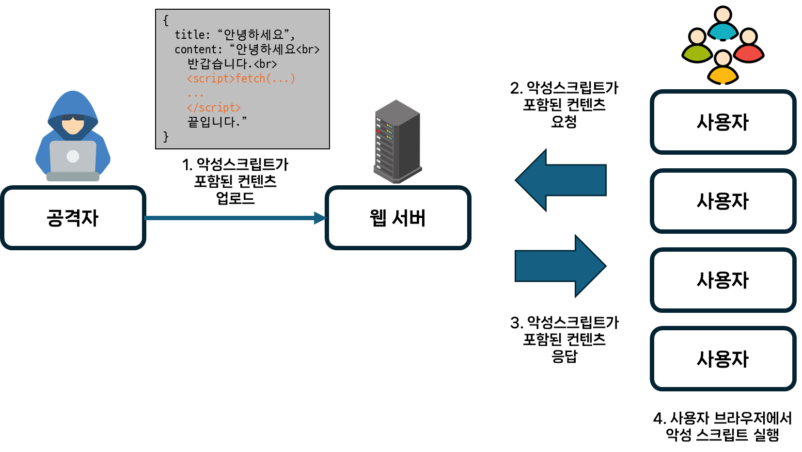
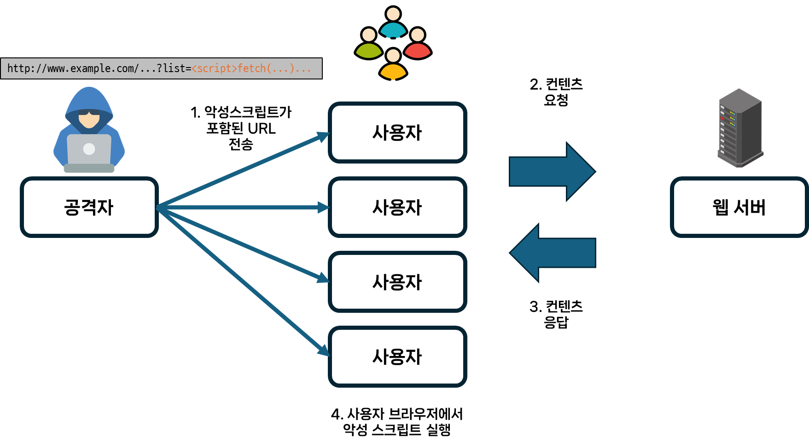
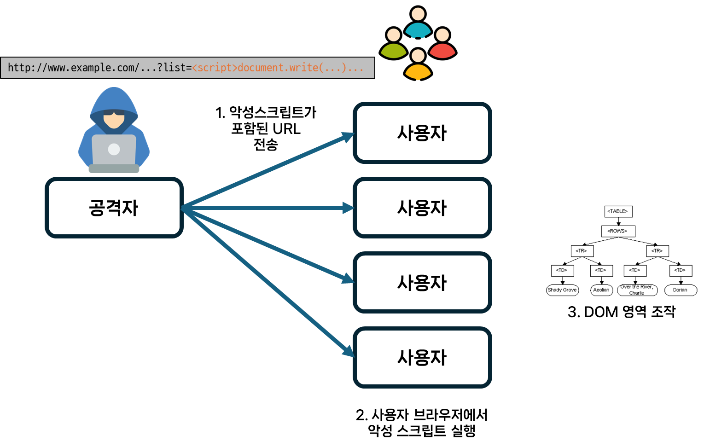

[웹, 네트워크] XSS 알아보기
서론
CS 스터디에서 3월 12일 발표한 XSS에 대해 정리한 문서를 블로그에 공유하고자 한다.
XSS란?
신뢰할 수 있는 웹 사이트에 악성코드를 삽입하는 공격을 말합니다.
공격자가 표적 웹사이트의 콘텐츠에 악성 스크립트를 삽입하고, 피해자의 브라우저에 전달되는 동적 콘텐츠에 이를 포함시키므로써 피해를 입게 됩니다.
이때, 피해자의 브라우저는 해당 스크립트가 ‘신뢰할 수 없는 스크립트’라는 점을 알 수 없어 해당 스크립트를 실행하게 됩니다.
악성 스크립트는 피해자의 브라우저가 보유한 해당 사이트에서 사용되는 모든 쿠키, 저장소에 저장된 민감 정보에 액세스할 수 있습니다.
뿐만 아니라 멀웨어를 퍼뜨리거나, 웹사이트의 콘텐츠를 변조하거나,피싱 사이트로 이동시키거나 하는 등의 공격도 가능합니다.
다른 웹 공격들과 달리, 애플리케이션 자체가 아닌 웹 애플리케이션 사용자를 표적으로 삼는다는 특징이 있습니다.
XSS 공격의 종류
저장형 크로스사이트 스크립팅(Stored Cross-site Scripting)

지속적(Persistent) XSS라고도 하는 공격 방식입니다.
사용자가 입력한 값이 저장(주로 게시판)된 후 이를 웹 페이지에서 출력할때 피해가 발생하는 공격입니다.
공격자의 악성스크립트가 서버에 저장되어 불특정 다수를 대상으로 공격에 이용될 수 있어 Reflected XSS보다 공격 대상의 범위가 훨씬 크다는 특징이 있습니다.
공격 방식
공격자가 스크립트가 포함된 콘텐츠(게시글, 댓글, 사용자 이름 등)를 작성한 뒤, 이를 피해자가 요청하게 되면 해당 스크립트가 피해자 측에서 동작하게 됩니다.
반사 크로스사이트 스크립팅(Reflected cross-site scripting)

비지속적(Non-Persistent) XSS라고도 하는 공격 방식입니다.
이름에 포함된 ‘반사’ 라는 단어처럼, 사용자가 요청한 스크립트가 사용자 측에서 반사되어 동작합니다. 즉, 공격자의 스크립트가 별도의 저장소에 저장되지 않고 사용자 측에서 즉시 동작합니다.
지속적 XSS와 달리, 공격자가 각 피해자들에게 페이로드(악성스크립트)를 전달해주어야 합니다. 따라서 악성 링크, 피싱 이메일, SNS 등을 이용해 해당 페이로드가 포함된 URL을 클릭하도록 유도해야 합니다.
공격 방식
공격자가 악성스크립트가 웹서버로 전송되는 요청(URL)의 일부가 되도록 합니다. 요청과 함께 포함되어있던 악성 스크립트가 사용자의 브라우저에서 동작하게 됩니다.
DOM 기반 크로스사이트 스크립팅(DOM-based cross-site scripting)

공격자의 스크립트가 HTML 내부가 아닌, DOM에 나타나는 공격 방식입니다.
반사/저장형 XSS에서는 응답 페이지에서 스크립트를 확인할 수 있는것과 다르게 HTML 소스 코드와 응답 페이지의 코드가 동일하기 때문에 페이로드를 찾을 수 없습니다.
따라서 런타임일때, 또는 페이지의 DOM을 조사해야만 스크립트를 찾을 수 있습니다.
DOM 기반 XSS는 주로 Client-side 공격으로, 악성 스크립트는 서버로 전송되지 않습니다. 따라서 서버 로그를 분석해도 공격을 확인할 수 없습니다.
공격 방식
공격자가 악성스크립트가 포함된 URL을 요청하면, 해당 스크립트를 실행해 DOM 영역을 변경합니다. 브라우저 자체에서 스크립트가 실행되어 DOM 영역을 변화시키므로 서로 패킷을 보내지 않고 공격이 수행됩니다.
주로 document, location와 같은 DOM 객체를 조작해 공격을 수행합니다.
CSRF랑 XSS의 차이점?
크로스-사이트 요청 위조(Cross-site Request Forgery)와 크로스-사이트 스크립팅(Cross-site Scripting) 모두 웹 애플리케이션에서 발견되는 보안 취약점입니다.
두 공격 방식의 가장 큰 차이는 인증된 세션(쿠키 등)을 활용하느냐 여부 입니다.
CSRF 공격은 사용자의 인증된 세션을 악용하는 공격 방식이고, XSS 공격은 사용자가 특정 사이트를 신뢰한다는 사실을 이용해 인증된 세션 없이도 공격할 수 있는 공격 방식입니다.
| CSRF | XSS |
|---|---|
| 사용자가 공격 사실을 모르는채 대상 웹사이트에 악성 요청을 보내도록 합니다. | 웹 사이트에 클라이언트 측 스크립트를 삽입해 공격합니다. |
| 공격을 수행하기 위해 Javascript가 필요하지 않습니다. | 공격을 수행하기 위해 Javascript가 필요합니다. |
| 악성 스크립트가 다른 사이트에 저장되어 있습니다. | 웹 사이트가 악성 스크립트를 허용합니다. |
| 취약한 URL에서 수행하는 작업만 수행할 수 있습니다. | 공격자가 취약점을 이용해 원하는 모든 행동을 할 수 있습니다. |
XSS는 프론트엔드에서만 방어할 수 있을까?
XSS 공격은 프론트엔드 뿐만 아니라, 백엔드단에서도 방어할 수 있습니다.
프로그래밍 언어와 웹 프레임워크 별로 방어 할 수 있는 방법들이 다양하지만, 해당 방법들의 주요 전략은 '사용자 입력 값을 전처리한다'입니다.
스크립트에서 자주 사용되는 <, >, (, ) 와 같은괄호를 HTML로 바꾼다거나, Lucy-XSS-Filter, OWASP ESAPI와 같은 라이브러리를 사용해 방어할 수 있습니다.
또한, Spring에서는 Spring Security에서 제공하는 X-XSS-Protection 헤더를 사용할 수도 있습니다.
X-XSS-Protection
브라우저에게 XSS 공격처럼 생긴 스크립트를 차단하도록 지시합니다.
해당 기능을 사용하면 브라우저는 XSS 공격을 감지했을때 이를 렌더링하지 않지만, 일부 웹 브라우저는 이에 필요한 XSS 감사기(Auditor)를 구현하지 않아 해당 헤더를 사용할 수 없습니다. 이를 보완하기 위해 콘텐츠 보안 정책(CSP) 기능을 사용할 수도 있습니다.
- 다만, 구글에서는 2019년 8월 XSS 감사기를 삭제했습니다.
- 지난 수 년 동안 XSS 감사기에 대한 수많은 우회 방법들이 제시되었고, 합법적인 사이트에 대한 액세스를 차단하는 경우도 존재했기 때문에 구글에서는 이를 삭제했습니다.
- 이후 DOM 기반 XSS 공격에 대한 방어책인 Trusted Types API 를 도입했습니다.
콘텐츠 보안 정책(CSP)
CSP는 XSS와 데이터 인젝션 공격을 완화하는데 도움을 주는 추가 보안 계층입니다. 이를 사용하려면 Content-Security-Policy 헤더를 반환하도록 애플리케이션을 구성해야 합니다.
@Configuration
public class SecurityConf {
@Bean
public SecurityFilterChain filterChain(HttpSecurity http) throws Exception {
http.headers(headers ->
headers.xssProtection(
xss -> xss.headerValue(XXssProtectionHeaderWriter.HeaderValue.ENABLED_MODE_BLOCK)
).contentSecurityPolicy(
cps -> cps.policyDirectives("script-src 'self'")
));
return http.build();
}
}
참고 문서
- What is a Cross-Site Scripting attack? Definition & Examples (kaspersky.com)
- 보안뉴스 - 웹 취약점과 해킹 매커니즘#7 XSS(Cross-Site Scripting) 상세화면 | 한국재정정보원 > 주요사업 > 사이버안전센터 운영 > 사이버위협 정보 및 통계 > 보안뉴스 (fis.kr)
- What is DOM-based XSS (cross-site scripting)? Tutorial & Examples | Web Security Academy (portswigger.net)
- Difference between XSS and CSRF - GeeksforGeeks
- X-XSS-Protection - HTTP | MDN (mozilla.org)
- Prevent Cross-Site Scripting (XSS) in a Spring Application | Baeldung
- 구글, 크롬의 XSS 오디터 삭제할 계획 - 데일리시큐 (dailysecu.com)
- Trusted Types API - Web APIs | MDN (mozilla.org)
- 21. Security HTTP Response Headers (spring.io)